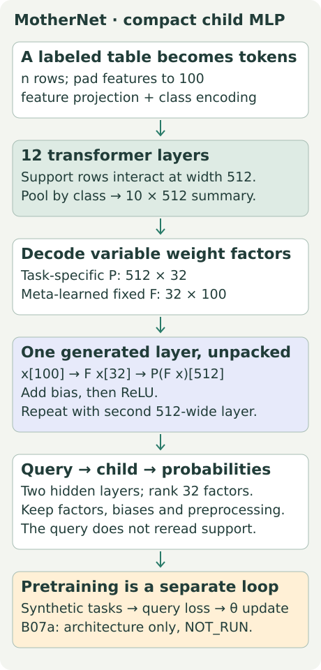
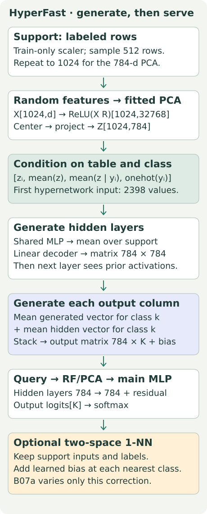
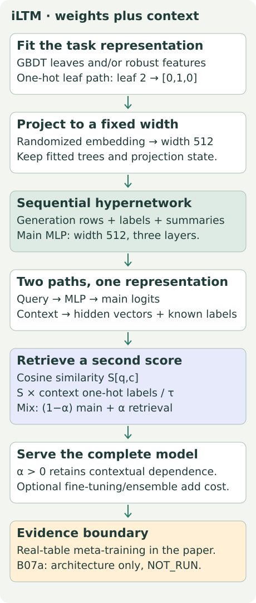
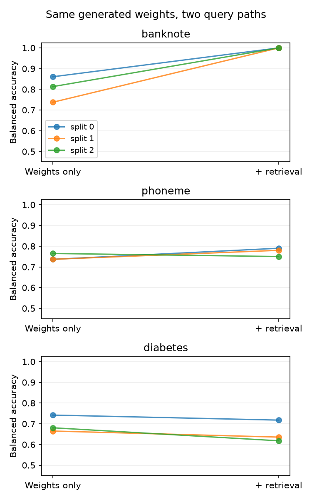
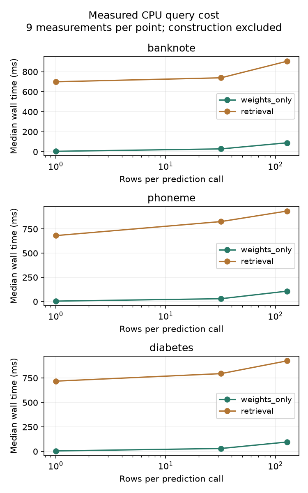

B07a · Generate a predictor from a table¶
Research bridge · Hypernetworks · one skill: trace what the support table turns into, then decide whether that work pays off over repeated queries.
B07: semantic transfer · B02: MLPs and ensembles · Student lab · Executed solution · Field guide
Start with the unresolved question¶
B07 separated what information enters from what adaptation changes. ConTextTab supplies labeled context; TabSTAR learns task-specific updates. There is a third possibility: feed the labeled table into one network and ask it to write the parameters of another network.
Imagine a fraud classifier serving the same table schema all afternoon. Repeating a costly support computation for every request may waste work. A hypernetwork moves some of that work into predictor construction. The catch is that preprocessing, retrieval, ensembles and support updates can remain expensive.
In plain terms. The large model builds the small model. Whether the small model can work alone depends on the complete prediction path.
Spend about 25 minutes on the conceptual path through the worked example and cost model. Use the lab as a separate deeper session. You do not need to run a GPU job to start learning.
Retrieve before reading¶
Without notes: what does an MLP layer compute? What distinguishes a frozen model receiving new context from a model taking gradient steps? Which rows may fit a scaler? Attempt these, then use the spaced warm-up.
Prerequisite recap. A labeled support set contains feature rows and their known targets. A query has known features but an unknown target. An MLP is a sequence of matrix multiplications, biases and nonlinearities. A weight multiplies an input; a bias adds an offset. A logit is an unnormalized class score. Softmax converts scores into probabilities by exponentiating them and dividing by their sum. A gradient tells an optimizer how to change parameters to reduce a loss.
1 · Two sets of weights, two learning times¶
Let S=(Xₛ,yₛ) denote labeled support. A hypernetwork h with parameters θ generates a predictor's parameters φ:
φ = hθ(S), then prediction = fφ(xq).
Here h is the generator, f is the generated predictor, and xq is a query row. θ was learned across many tasks during meta-training. φ changes when the support table changes, even if θ stays frozen. At deployment, generating φ can require no optimizer step.
During meta-training, a task is split into support and queries. Generate φ from support; score query predictions against query targets; backpropagate that query loss through the generated predictor and into θ. Query labels supervise the training loss, not the generator's input. The released checkpoint packages the earlier meta-training work; it does not erase its cost.
A retrieval variant instead computes fφ(xq,S). It still consults stored support at prediction time. HyperFast, model definition and NN correction
2 · Model architecture: MotherNet¶
Read the diagram as two phases. The transformer processes a labeled table once. Its decoder emits factors for a child MLP. A new query goes through that child, without another support-attention pass.

MotherNet encodes numeric rows and one-hot class labels. Twelve transformer layers build 512-dimensional row representations. Class-wise averaging produces a table summary. A decoder maps that summary into task-specific weight factors. The paper's child has two 512-wide hidden layers and rank 32 weight matrices. MotherNet v2 §3.1
Why factors? A dense 512×100 matrix contains 51,200 entries. Factoring it as P[512,32]F[32,100] uses 16,384+3,200=19,584 entries. In this model P is generated and F is learned during meta-training and fixed afterward. Compute Fx first, then P(Fx), add the bias and apply ReLU, which replaces negative values with zero. Low rank restricts the possible matrix; it is not merely a storage trick with no modeling consequence.
What remains? The child parameters, fixed factors and fitted preprocessing. Ensembling multiplies child construction and query work; the paper evaluates an eight-member strategy. The architecture illustration is not a MotherNet run in this lesson. MotherNet v2 §3.2
3 · Model architecture: HyperFast¶
HyperFast uses feedforward hypernetwork modules instead of MotherNet's support transformer. The released checkpoint is large; its role is to generate a task predictor once, then let that predictor handle queries.

Make tables with different widths comparable¶
Standardize. Fit each feature's mean and scale on training rows. Transform support and queries with those same values.
Random features. A freshly sampled matrix R maps d input features to 32,768 coordinates. ReLU creates nonlinear random features. R is part of the generated predictor's state; queries reuse it.
PCA. Principal component analysis fits directions of variation to the support's random features. Center by the fitted mean and project to 784 coordinates. This gives a fixed-width representation for the hypernetwork, regardless of d. The release uses a full singular-value decomposition, not a learned encoder hiding inside an API. HyperFast, initial transformation layers
Write layers, then use them¶
For support row i, concatenate its 784-vector, the global 784-vector mean, its class's 784-vector mean and a 46-slot one-hot label. The first hypernetwork sees 2,398 values per row. Later modules additionally receive the preceding main-layer activations.
A shared feedforward core produces per-row embeddings. Mean pooling collapses these into a table representation; a decoder emits the next 784×784 matrix and 784 biases. Generate a layer, apply it to support, then generate the following layer. The two hidden layers use a residual connection, which adds the earlier representation back before ReLU.
The output module is different: it produces a 785-vector for each support row. Average those vectors within each class. Add that class's mean hidden vector to the first 784 entries. The last entry is the output bias. This produces one output column per class. Pinned model source
Worked example · actual weights, small numbers¶
Use an illustrative two-coordinate hidden state. Class 0 has two support rows; class 1 has one.
| Row | Class | Generated vector: two weights + bias | Main hidden vector |
|---|---|---|---|
| A | 0 | [1,2,0.1] | [2,0] |
| B | 0 | [3,4,0.3] | [0,2] |
| C | 1 | [5,6,0.5] | [1,1] |
For class 0, the generated-vector mean is [2,3,0.2]. Add hidden mean [1,1] to the first two entries: [3,4,0.2]. Class 1 yields [6,7,0.5]. Thus W has columns [3,4] and[6,7], and b=[0.2,0.5].
A query hidden vector z=[1,2] gives zW+b=[11.2,20.5]. Class 1 wins. If a nearest-neighbor correction adds 10 to class 0, the logits become [21.2,20.5] and class 0 wins. The correction changed the prediction without changing W.
Keep the generated weights; change the query path
Toy hidden query z=[1,t]. Predict the winning class before enabling retrieval.
Two retrieval spaces. The actual release finds the nearest support row once in standardized input space and once in the penultimate hidden space. Each match adds its learned bias to the matched class's logit. It uses Euclidean distance, not iLTM's cosine-weighted label aggregate. Support duplicates can tie; the first support index wins. The widget uses one illustrative correction to make the arithmetic visible. Pinned nearest-neighbor implementation
Paper/release distinction. The paper’s ablation table names a correction using PCA features. Both archived inference wrappers instead use standardized original features for the first correction. B07a follows the actual release code and exposes that difference; it does not silently claim paper-equation parity. Paper ablations · Publication-era wrapper
Scope check. The code can repeat a small support batch until PCA has enough rows. Repeating a row creates no new evidence or independent observations. The course keeps the released 784-dimensional representation and explicitly records the repeated support.
4 · Model architecture: iLTM¶
The next model combines weight generation with a richer task representation and a retained retrieval path. It is useful because it defeats the tempting shortcut “hypernetwork means support-free inference.”

Tree representation. A gradient-boosted decision tree model can be fitted on training data. Each row lands in one leaf per tree. One-hot encode those leaf identities and concatenate them; this turns learned partitions into features. iLTM also supports robustly preprocessed features and combinations of these paths. A randomized projection supplies a fixed-size representation. iLTM §3.1
Generated main model. Layer-by-layer hypernetwork modules generate the MLP parameters using labeled generation rows and their summaries. Optional downstream fine-tuning changes those parameters using gradients. It must be counted separately from generation. iLTM §§3.3–3.5
Retained context. Embed the query and labeled context into hidden vectors. Compute cosine similarity, the dot product divided by both vector lengths. Multiply the similarity matrix S by context one-hot labels Yc, divide by a positive temperature τ, and mix the resulting logits with the main logits using α. Here α=0 selects the pure main path; α>0 includes retrieval. These equations describe the paper's score aggregation; do not silently replace it with a softmax attention rule. iLTM §3.2
Data-overlap check. Which datasets trained the generator? Which selected its checkpoint? Which evaluate transfer? HyperFast's source lists train/validation/test families; iLTM describes an exclusion pipeline. A name mismatch alone cannot prove independent datasets. Our three tables are listed as HyperFast meta-test tasks, but we have not independently reconstructed the entire historical training corpus. HyperFast Appendix A · iLTM Appendix C
A useful disagreement. MotherNet v2 reports weak small-table HyperFast results without downstream optimization and contrasts different tuning regimes. Treat that as evidence tied to its benchmark and settings, not a universal verdict. Our two-path intervention does not rerun that model comparison. MotherNet v2 evaluation
5 · When does construction pay for itself?¶
First compare complete operating points. An operating point specifies the checkpoint, support size, ensembles, optional tuning, retrieval, preprocessing, cache policy, hardware and query batch size.
For a simple constant-cost model, let B be construction time, c be time per query, Q be total queries, and U be the number of later support refreshes. Then:
T(Q,U) = (U+1)B + Qc.
Add fine-tuning and retrieval setup to B when used. Put per-query retrieval into c. If a refresh requires a full rebuild, charge B again. A fitted tree and an ICL cache can also have construction costs. If context changes after every request, a one-time construction story is inadequate.
Worked example. Assume A costs 2s to build and 0.001s per query. Assume B costs 0s to build and 0.005s per query. Solve 2+0.001Q < 0.005Q: Q>500. The first integer query count making A strictly cheaper is 501. At 500 they tie. Two refreshes require 6s of total construction, so the threshold becomes 1,501.
Construction versus repeated work
Illustrative assumptions: A builds in 2 s and costs 1 ms/query; B builds in 0 s and costs 5 ms/query. Hold these costs fixed.
For two methods, subtract their fixed costs and divide by the positive per-query saving. If A costs more to construct and its queries are no cheaper, there is no break-even. If A starts cheaper but has a steeper query cost, it may win initially and lose later. A threshold alone does not establish permanent dominance.
Batching matters. A 128-row call need not cost 128 times a one-row call. Our experiment measures 1,32 and 128-row calls directly. Do not extrapolate a single fitted slope across arbitrary batches. Direct ICL and a task-trained MLP appear here as comparison contracts, not measured competitors. Their construction and query costs must be measured under the same conditions before declaring a winner.
6 · The approved experiment, before the results¶
Held fixed: full released HyperFast dimensions and checkpoint; one generated predictor; no fine-tuning; each split's scaler, sampled support, random-feature matrix, PCA and generated main weights.
Varied: whether two nearest-neighbor logit corrections are applied. Nine generated predictors produce 18 evaluation arms: three real datasets × three split/model seeds × two query paths. A tenth construction measures one support refresh on banknote seed 0; it is not a tenth independent evaluation seed.
Data: full banknote (1,372 rows,4 features), phoneme (5,404,5) and diabetes (768,8). Fresh stratified 80/20 splits use seeds 0/1/2. Each generator samples 512 training rows and repeats each twice to 1,024. The scaler sees the full training partition. Test targets enter scoring only. The support-refresh example adds one previously held-out labeled row and reports construction cost only.
Measured: balanced accuracy, log loss, predictor construction time, repeated-query wall time, stored array bytes and refresh cost. Balanced accuracy averages recall over the two classes, weighting each class equally. Log loss averages the negative log probability assigned to the true class; confidently wrong predictions cost more.
Timing contract: one CPU thread; 1/32/128 query rows; one warm-up followed by three repetitions per seed and path; alternate path order. The release recomputes support hidden states on each retrieval call. A cache optimization is a different implementation and must be labeled. Retained-byte counts cover prediction arrays (including scaler mean/scale), not every fitted-object field or peak process RAM; the course adapter keeps support for both arms even though the pure path could discard it.
Predict first: will retrieval improve every split? Will construction dominate ten queries? Write an answer before opening the evidence.
Reveal measured course results
| Dataset | Weights only | With retrieval | Paired change |
|---|---|---|---|
| banknote | 80.38 ± 6.20% | 100.00 ± 0.00% | +19.62 pp |
| phoneme | 74.61 ± 1.63% | 77.34 ± 2.09% | +2.73 pp |
| diabetes | 69.59 ± 4.07% | 65.72 ± 5.32% | -3.88 pp |
Mean balanced accuracy ± sample SD over three paired split/model seeds. Paired change is retrieval minus weights-only, in percentage points. SD is not a confidence interval.


All 18 prediction arms / 9,060 query predictions passed independent row/label, output-layer, retrieval and scalar-score reconstruction. Source-wrapper prediction parity was checked for all nine generated predictors.
Construction took 17.01–20.90s across nine predictors (median 18.69s). Checkpoint object loading took 0.01s; authentication/download is separate. The banknote seed0 refresh took20.70s, changed the generated-state hash, and was not scored as held-out quality.
For banknote, pure predictor arrays require about103.33MiB; adding stored raw support/labels gives103.35MiB. The shared hypernetwork's parameters occupy about4.74GiB; do not confuse the builder with its output. Python/temporary/allocator/peak memory is excluded. The adapter retains support in both arms; discarding it in the pure path is a possible deployment change, not something measured here.
Retrieval raises mean balanced accuracy from 80.38% to 100.00% on banknote and 74.61% to 77.34% on phoneme, but lowers it from 69.59% to 65.72% on diabetes. Phoneme has one negative split effect; diabetes has three. Banknote happens to equal the published 100% number, but the original split/subsample/search identities are still missing: this numerical coincidence is not reproduction.
The quality plot connects the same split across paths. Read each line before trusting a mean: retrieval is an intervention, not a guaranteed improvement. The timing plot excludes construction and shows the release's support recomputation cost. With only these three tables and one checkpoint, no broad model ranking is justified. Nearest-neighbor-only and random-generator controls were not run, so the contribution of meta-training is not isolated. Full per-split log loss and raw timings are in the audit and run report.
Scope check. This is selected-checkpoint inference under a new course protocol. It does not establish broad hypernetwork superiority, whole-paper reproduction, independent pretraining, historical identity or learner mastery. No MotherNet/iLTM/ICL/MLP ranking was executed. A nearest-neighbor-only baseline and a random-generator control were not run, so these results do not isolate the benefit of meta-training.
7 · Full reproduction: the boundary is part of the lesson¶
The named paper target is HyperFast v1 Table 7, banknote-authentication: 100.0% balanced accuracy with 0.0 reported spread, under ten mini-test repetitions and a five-minute budget per repetition. The full table's evaluation protocol is not our nine-split ablation. Original Table 7
The publication-era commit and current commit expose the architecture, checkpoint URL, preprocessing and optional downstream optimizer. Their configuration files match. But the original split IDs, ten mini-test subsets, exact five-minute search/selection trajectory and original per-repeat outputs are unavailable in the inspected release. A matching score on our new split would not fix those gaps.
Status: INCOMPLETE_SOURCE_PROTOCOL. The original command verifies source hashes and refuses execution while those inputs are missing. It is a tested preflight, not a complete runnable reconstruction of the missing historical evaluator. Full pretraining and all-paper benchmarking remain NOT_RUN. The course command is executable independently.
# From the relational repository; no paid dispatch.
.venv/bin/python labs/_reproduce_b07a.py
.venv/bin/python labs/_reproduce_b07a.py --run # intentionally refuses original target
.venv/bin/python labs/_budget_b07a.py .venv/bin/python labs/_run_b07a.py --output /tmp/b07a-fresh
The course runner needs the authenticated 5.09 GB checkpoint. The notebook includes a streaming downloader and exact hash; the checkpoint is not embedded in the webpage or notebook. The portable evidence package supports offline audit without that download. Protocol and deviations · Source gate · Course audit
8 · Lab: make the mechanism yours¶
The student notebook carries all three architecture maps, the worked trace, complete visible released HyperFast architecture and optional downstream optimizer, and the complete course loop. Three live functions belong to you:
- Pool generated vectors by class and add the hidden-state residual to weights, not biases.
- Apply the nearest-class correction without mutating the original logits or using query labels.
- Compute strict break-even volume, including refreshes and cases where it never occurs.
Each task has immediate hand-computed checks. The solution executes the fresh course lane; the student starts with blanks. Offline replay authenticates saved evidence, while RUN_FRESH=True regenerates predictors. These are different accomplishments.
EXIT: defend the claim. Explain one split where retrieval helps or hurts. Name every retained object after construction. Specify a fair measurement contract against ICL and a task-trained MLP. Give two falsification tests: changing only query labels must not change predictions; changing labeled support can change the generated predictor and forces an explicit refresh policy. Explain what original Table 7 evidence is still missing.
Return after 1/7/30 days following completion. Draw support→weights→query from memory; derive the 501-query threshold; explain why retrieval can invalidate a “support-free” claim. Ask the agent follow-up questions or paste your written defense for feedback. Author checks leave your status PENDING_WRITTEN_DEFENSE.
Next connection. Carry this operating-point inventory into B18a's serving choices and the bridge comparison checkpoint. The mission is to attribute any eventual relational-model advantage to the right mechanism and complete cost, not to a model-family label.